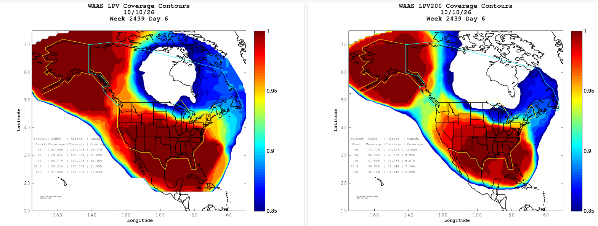
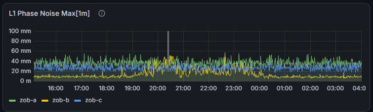
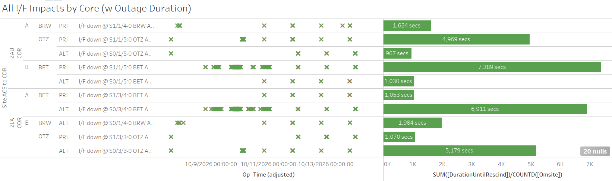
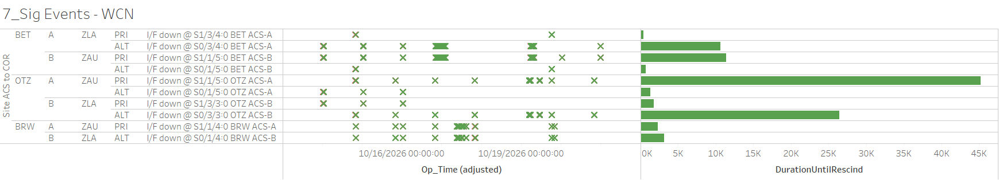

Weekly Highlights 20261007-20261014
SSM-WAAS-065 / DFO-2 Cutover Activities
SSM-WAAS-065 was released on 2/12/26 to upgrade the WAAS subsystems by performing the following hardware changes:
- Remove Legacy PCUs / Replace with new Power Distribution Units (PDUs) and DC Power Supplies (DCPS)
- Remove Legacy KVMs / Replace with new form-fit-function KVM
The DFO-2 Field Test Activities to implement limited operational capability (LOC) of L5 messaging are also being scheduled.
DFO-2 activities will be delayed...
- 10/8 14:02 - SSM-WAAS-065 - NOC
upgrades POC to W7.442L; during upgrade received
SE 108 Process Failure Notice for the RDSP
process -- had POC remove RMD USB and then
Control Powered; restored to Normal at
10/8 15:10
- 10/8 16:12 - Upgrade POC OAC-A to W7.442L; SNMP Cold Start at 10/8 16:18
- 10/8 16:21 - Upgrade POC OAC-B to W7.442L; SNMP Cold Start at 10/8 16:28
- 10/8 15:16 - SSM-WAAS-065 - POC
upgrades NOC to W7.442L; during Verification,
noticed OAC Routers needed to be updated to
latest versions; restored to Normal at
10/8 16:09
- 10/8 15:36 - Upgrade NOC OAC-A to W7.442L; SNMP Cold Start at 10/8 15:43
- NOC OAC-B was already running lastest build
0 WRS sites remain 🎉
- Beginning coordination to return legacy items from Canada and Mexico...
- After the O&M Upgrades are complete, we will kick off the 2-week post-mod monitoring period from 10/8-10/22
| Site | Site Type | Upgrade Start | Upgrade Complete |
|---|---|---|---|
| POC - San Diego TRACON | OM | 2/19/2026 18:54 | 2/19/2026 21:28 |
| ZTL - Atlanta ARTCC | WMS / WCN | 2/19/2026 22:05 | 2/20/2026 2:02 |
| ZLA - Los Angeles ARTCC | WMS / WCN | 2/24/2026 16:24 | 2/24/2026 19:56 |
| ZDC - Washington, D.C. ARTCC | WMS / WCN | 2/26/2026 14:04 | 2/26/2026 19:26 |
| ZAU - Chicago ARTCC | WCN | 3/3/2026 14:15 | 3/3/2026 16:22 |
| NOC - Warrenton ATCSCC | OM | 3/3/2026 16:47 | 3/3/2026 19:21 |
| SZ1 - Santa Paula | SGS | 3/4/2026 17:08 | 3/4/2026 20:59 |
| CM1 - South Mountain | SGS | 3/5/2026 16:45 | 3/6/2026 3:04 |
| AP1 - Napa | SGS | 3/10/2026 15:15 | 3/10/2026 18:27 |
| DX1 - Southbury | SGS | 3/12/2026 13:06 | 3/12/2026 18:33 |
| BR1 - Brewster (S97A) | SGS | 3/25/2026 16:03 | 3/25/2026 21:46 |
| BR2 - Brewster (S97B) | SGS | 3/26/2026 15:54 | 3/26/2026 21:09 |
| ZOA - Oakland ARTCC | WRS2 | 3/31/2026 16:31 | 4/2/2026 18:00 |
| ZMA - Miami ARTCC | WRS2 | 4/2/2026 0:17 | 4/2/2026 5:45 |
| ZLA - Los Angeles ARTCC | WRS2 | 4/14/2026 15:39 | 4/14/2026 20:35 |
| ZNY - New York City ARTCC | WRS2 | 4/15/2026 13:20 | 4/15/2026 17:23 |
| ZFW - Fort Worth ARTCC | WRS2 | 4/23/2026 17:52 | 4/23/2026 22:22 |
| ZBW - Boston ARTCC | WRS2 | 4/28/2026 12:56 | 4/28/2026 19:47 |
| ZAB - Albuquerque ARTCC | WRS2 | 4/29/2026 13:55 | 4/29/2026 18:11 |
| ZMP - Minneapolis ARTCC | WRS2 | 5/6/2026 13:39 | 5/6/2026 18:13 |
| ZSU - San Juan CERAP | WRS2 | 5/12/2026 12:59 | 5/14/2026 14:29 |
| ZHU - Houston ARTCC | WRS2 | 5/27/2026 13:45 | 5/27/2026 17:00 |
| ZAN - Anchorage ARTCC | WRS2 | 5/28/2026 16:43 | 5/28/2026 21:02 |
| ZSE - Seattle ARTCC | WRS2 | 6/2/2026 15:26 | 6/2/2026 18:28 |
| ZKC - Kanas City ARTCC | WRS2 | 6/9/2026 14:05 | 6/9/2026 18:43 |
| ZAU - Chicago ARTCC | WRS2 | 6/10/2026 13:31 | 6/10/2026 17:20 |
| ZJX - Jacksonville ARTCC | WRS2 | 6/16/2026 13:47 | 6/16/2026 19:27 |
| ZOB - Cleveland ARTCC | WRS2 | 6/17/2026 13:40 | 6/17/2026 16:25 |
| OTZ - Kotzebue FSS | WRS5 | 6/23/2026 18:43 | 6/23/2026 20:56 |
| JNU - Juneau AFSS | WRS2 | 6/26/2026 17:02 | 6/26/2026 19:26 |
| ZLC - Salt Lake City ARTCC | WRS2 | 6/30/2026 15:45 | 6/30/2026 18:38 |
| ZDC - Washington, D.C. ARTCC | WRS2 | 7/7/2026 13:38 | 7/7/2026 19:06 |
| ZME - Memphis ARTCC | WRS2 | 7/14/2026 15:03 | 7/14/2026 20:51 |
| YQX - Gander | WRS5 | 7/17/2026 12:02 | 7/17/2026 16:22 |
| YYR - Goosebay | WRS5 | 7/21/2026 13:00 | 7/21/2026 16:17 |
| YFB - Iqaluit | WRS5 | 8/5/2026 01:48 | 8/5/2026 07:22 |
| CDB - Cold Bay FSS | WRS2 | 8/11/2026 17:08 | 8/13/2026 21:42 |
| MMX - Mexico City | WRS5 | 8/13/2026 18:23 | 8/13/2026 22:29 |
| MMD - Merida | WRS5 | 8/18/2026 16:08 | 8/18/2026 20:29 |
| BET - Bethel FCT | WRS5 | 8/18/2026 17:47 | 8/19/2026 00:54 |
| ZTL - Atlanta ARTCC | WRS2 | 8/19/2026 15:47 | 8/19/2026 20:31 |
| FAI - Fairbanks AFSS | WRS5 | 8/21/2026 17:18 | 8/21/2026 21:22 |
| BIL - Billings TRACON | WRS5 | 8/25/2026 15:02 | 8/25/2026 21:02 |
| ZDV - Denver ARTCC | WRS5 | 8/26/2026 15:23 | 8/26/2026 20:43 |
| BRW - Barrow FSS | WRS5 | 9/1/2026 18:03 | 9/1/2026 21:36 |
| HNL - Honolulu AFSS | WRS2 | 9/16/2026 20:10 | 9/18/2026 20:07 |
| MTP - Tapachula | WRS5 | 9/29/2026 14:59 | 9/29/2026 19:51 |
| MPR - Puerto Vallarta | WRS5 | 10/1/2026 16:00 | 10/1/2026 20:22 |
| MSD - San Jose Del Cabo | WRS5 | 10/6/2026 16:14 | 10/6/2026 19:04 |
| POC - San Diego TRACON | OM | 10/8/2026 14:02 | 10/8/2026 15:10 |
| NOC - Warrenton ATCSCC | OM | 10/8/2026 15:16 | 10/8/2026 16:09 |
L1/L2 Bias Alarms

10/8 - SM9 GUS Switchover (DX1 Seasonal Sun Interference)
- 10/8 07:01 - GUS Switchover-SM9 -
SZ1 to Primary / DX1 to Backup for
Seasonal sun interference-- ref LIR 1219508224
10/10 - G3 Geomagnetic Storm

10/13 - ZAU COR-A Control Power
- 10/13 13:42 - ZAU COR-A Control Powered OFF; SNMP Cold Start at 10/13 13:55 (~716 seconds)
10/13 - ZOB WRE-B Phase Noise
- 10/13 19:38 - ZOB WRE-B SE flapping 30 Minor Alarm from Freq Std; last SE cleared at 10/13 20:35
- 10/13 22:37 - ZOB WRE-B SE flapping 30 Minor Alarm
from Freq Std; last SE cleared at 10/13
23:15
- Elevated phase noise and allen voltage deviation during Minor Alarms

10/13 - ZTL GPS Clock Issue
- 10/13 20:34 - ZTL GPS Clock SE 200 Reception Problem; SE cleared at 10/13 20:44
10/14 - MMX WRE-B Monitoring...
- 10/14 13:35 - MMX WRE-B moved to Verification for additional monitoring capabilities; inadvertently set to Normal at 10/14 13:45, but this poses a danger to WAAS in the event of spoofing; Operators unable to change the mode to Maintenance for some reason, so Control Powered instead; returned to Maintenance Mode again at 10/14 14:06...
- 10/14 20:54 - MMX WRE-B to Verification for additional monitoring capabilities; reduced to Maintenance again at 10/14 20:58...
- 10/14 20:58 - MMX WRE-C to Verification for additional monitoring capabilities; reduced to Maintenance again at 10/14 21:01...
Various Comm Impacts
* Only captures major / long-term comm outages
Mexico Comms
- 10/7 04:29 - All MX Ring 1 Ethernet comms down hard; all lines cleared at 10/7 04:31 (~105 seconds)
- 10/7 05:03 - All MX Ring 1 Ethernet comms down hard; all lines cleared at 10/7 05:04 (~105 seconds)
- 10/13 21:24 - MTP Ring 1 comms down hard -- OFFLINE; line cleared at 10/14 01:34 (~14996 seconds)
- 10/14 03:30 - MTP Ring 1 comms down hard -- OFFLINE; line cleared at 10/14 03:40 (~595 seconds)
OTZ / BET / BRW Comms

- 10/7 14:23 - OTZ all Ring 1 / Ring 2 comms down hard; all lines cleared at 10/7 14:25 (~149 seconds)
- 10/7 19:39 - BRW Ring 1 PRI / Ring 2 ALT comms down hard -- OFFLINE; both lines cleared at 10/7 19:42 (~204 seconds)
- 10/8 19:12 - BET Ring 1 ALT / Ring 2 PRI comms down hard; both lines cleared at 10/8 19:14 (~160 seconds)
- 10/9 02:00 - BET Ring 1 ALT / Ring 2 PRI comms flapping; last events cleared at 10/9 06:30 (~344 seconds total)
- 10/9 16:35 - BET Ring 1 ALT / Ring 2 PRI comms flapping; last events cleared at 10/9 00:44 (~4659 seconds total)
- 10/10 07:04 - BET Ring 1 ALT comms flapping; line cleared at 10/10 11:16 (~189 seconds total)
- 10/10 20:16 - BRW Ring 1 PRI / Ring 2 ALT comms down hard -- OFFLINE; both lines cleared at 10/10 20:20 (~224 seconds)
- 10/10 20:17 - OTZ Ring 1 PRI / Ring 1 ALT comms down hard; both lines cleared at 10/10 20:20 (~184 seconds)
- 10/10 20:17 - BET Ring 1 PRI / Ring 2 ALT comms down hard; both lines cleared at 10/10 20:20 (~171 seconds)
- 10/10 20:47 - BET Ring 1 ALT comms flapping; line cleared at 10/11 00:43 (~555 seconds total)
- 10/11 20:02 - BET Ring 1 PRI / Ring 2 ALT comms down hard; both lines cleared at 10/11 20:06 (~251 seconds)
- 10/11 20:03 - OTZ Ring 1 PRI / Ring 2 ALT comms down hard; both lines cleared at 10/11 20:10 (~381 seconds)
- 10/11 20:06 - BRW Ring 1 PRI / Ring 2 ALT comms down hard -- OFFLINE; both lines cleared at 10/11 20:11 (~308 seconds)
- 10/11 20:16 - OTZ Ring 1 PRI / Ring 2 ALT comms down hard; both lines cleared at 10/11 20:19 (~194 seconds)
- 10/11 20:16 - BRW Ring 1 PRI / Ring 2 ALT comms down hard -- OFFLINE; both lines cleared at 10/11 20:20 (~228 seconds)
- 10/11 20:16 - BET Ring 1 PRI / Ring 2 ALT comms down hard; both lines cleared at 10/11 20:19 (~176 seconds)
- 10/12 00:37 - BET Ring 1 ALT / Ring 2 PRI comms flapping; last events cleared at 10/12 00:46 (~376 seconds total)
- 10/12 00:41 - OTZ Ring 1 ALT / Ring 2 PRI comms down hard; both lines cleared at 10/12 00:45 (~208 seconds)
- 10/12 20:00 - BET Ring 1 PRI / Ring 2 ALT comms down hard; both lines cleared at 10/12 20:06 (~361 seconds)
- 10/12 20:02 - OTZ Ring 1 PRI / Ring 2 ALT comms down hard; both lines cleared at 10/12 20:10 (~486 seconds)
- 10/12 20:05 - BRW Ring 1 PRI / Ring 2 ALT comms down hard -- OFFLINE; both lines cleared at 10/12 20:12 (~455 seconds)
- 10/13 00:35 - BET Ring 1 ALT / Ring 2 PRI comms down hard; both lines cleared at 10/13 00:45 (~585 seconds)
- 10/13 00:36 - OTZ Ring 1 ALT / Ring 2 PRI comms down hard; both lines cleared at 10/13 00:39 (~159 seconds)
- 10/13 00:40 - OTZ Ring 1 ALT / Ring 2 PRI comms down hard; both lines cleared at 10/13 00:44 (~255 seconds)
- 10/13 14:04 - BRW Ring 1 PRI comms down hard; line cleared at 10/13 14:07 (~173 seconds)
- 10/13 20:00 - BET Ring 1 PRI / Ring 2 ALT comms down hard; both lines cleared at 10/13 20:06 (~371 seconds)
- 10/13 20:01 - OTZ Ring 1 PRI / Ring 2 ALT comms down hard; both lines cleared at 10/13 20:10 (~553 seconds)
- 10/13 20:04 - BRW Ring 1 PRI / Ring 2 ALT comms down hard -- OFFLINE; both lines cleared at 10/13 20:13 (~546 seconds)
- 10/14 00:34 - OTZ Ring 1 ALT / Ring 2 PRI comms down hard; both lines cleared at 10/14 00:39 (~289 seconds)
- 10/14 00:35 - BET Ring 1 ALT / Ring 2 PRI comms down hard; lines came back up to flapping at 10/14 00:44; last events cleared at 10/14 00:46 (~643 seconds total)
- 10/14 00:40 - BRW Ring 1 ALT / Ring 2 PRI comms down hard; both lines cleared at 10/14 00:44 (~195 seconds)
- 10/14 20:01 - BET Ring 1 PRI / Ring 2 ALT comms down hard; both lines cleared at 10/14 20:05 (~263 seconds)
- 10/14 20:01 - OTZ Ring 1 PRI / Ring 2 ALT comms down hard; both lines cleared at 10/14 20:10 (~564 seconds)
- 10/14 20:03 - BRW Ring 1 PRI / Ring 2 ALT comms down hard; both lines cleared at 10/14 20:13 (~575 seconds)
YFB Comms
- 10/7 18:21 - YFB Ring 2 comms down hard; line cleared at 10/7 18:23 (~109 seconds)
- 10/11 18:39 - YFB Ring 1 comms down hard; line cleared at 10/11 18:41 (~136 seconds)
- 10/12 18:37 - YFB Ring 1 / Ring 2 comms down hard -- OFFLINE; both lines cleared at 10/12 18:42 (~269 seconds)
- 10/13 18:36 - YFB Ring 2 comms down hard;
line cleared at 10/13 18:42 (~316
seconds)
- 10/13 18:37 - YFB Ring 1 comms down hard -- OFFLINE; line cleared at 10/13 18:43 (~362 seconds)
- 10/14 18:36 - YFB Ring 1 / Ring 2 comms down hard -- OFFLINE; both lines cleared at 10/14 18:43 (~350 seconds)
YYR Comms
- 10/8 19:50 - YYR Ring 2 comms flapping with extended downs; line cleared at 10/8 21:59 (~2970 seconds total)
- 10/10 16:11 - YYR Ring 2 comms flapping with extended downs; last event cleared at 10/10 17:52 (~2691 seconds total)
- 10/11 18:43 - YYR Ring 1 comms down hard; line cleared at 10/11 18:48 (~311 seconds)
- 10/12 03:12 - YYR Ring 2 comms flapping; last event cleared at 10/12 11:59 (~425 seconds total)
- 10/13 06:59 - YYR Ring 2 comms flapping; last event cleared at 10/13 13:13 (~238 seconds total)
- 10/13 18:44 - YYR Ring 1 comms down hard; line cleared at 10/13 18:46 (~100 seconds)
- 10/14 12:51 - YYR Ring 2 comms down hard; line cleared 10/14 17:34 (~16942 seconds)
CDB Comms
- 10/9 14:43 - CDB Ring 1 comms flapping; last event cleared at 10/9 14:47 (~114 seconds total)
- 10/9 14:47 - CDB Ring 2 comms flapping; last event cleared at 10/9 15:02 (~575 seconds total)
- 10/9 15:53 - CDB Ring 1 comms down hard; line cleared at 10/9 15:59 (~382 seconds)
- 10/10 08:32 - CDB Ring 1 comms down hard; line cleared at 10/10 08:44 (~691 seconds)
- 10/10 08:45 - CDB Ring 1 comms down hard; line cleared at 10/10 09:16 (~1876 seconds)
- 10/11 21:07 - CDB Ring 1 comms flapping with extended downs; last event cleared at 10/11 21:35 (~1129 seconds total)
- 10/13 14:53 - CDB Ring 1 comms down hard; line cleared at 10/13 14:54 (~91 seconds)
Other Sites
- 10/7 16:33 - JNU Ring 1 ALT / Ring 2 PRI comms down hard; both lines cleared at 10/7 16:34 (~86 seconds)
- 10/7 17:02 - FAI Ring 1 ALT / Ring 2 PRI comms down hard; both lines cleared at 10/7 17:04 (~100 seconds)
- 10/8 17:59 - CM1 Ring 1 PRI / Ring 2 ALT comms flapping; last event cleared at 10/8 18:16 (~127 seconds total)
- 10/14 08:18 - CM1 Ring 1 PRI / Ring 2 ALT comms down hard; both lines cleared at 10/14 20:15 (~42991 seconds)
- 10/9 19:07 - ZSU Ring 1 ALT / Ring 2 PRI comms flapping; last events cleared at 10/11 17:30 (~464 seconds total)
- 10/14 08:18 - CM1 Ring 1 PRI / Ring 2 ALT comms down hard...
- 10/14 16:50 - YQX Ring 1 / Ring 2 comms down hard -- OFFLINE; both lines cleared at 10/14 19:35 (~9895 seconds)
- 10/14 20:13 - ZSU Ring 2 PRI comms down hard; line cleared at 10/14 20:16 (~174 seconds)
8/13 BRW Ring 1 ALT / Ring 2 PRI Comms
- 8/13 10:57 - BRW Ring 1 ALT / Ring 2 PRI
comms flapping...
- 8/13 17:49 - BRW Ring 1 ALT comms down hard -- ref LIR 1472365532...
- 8/14 00:32 - BRW Ring 2 PRI comms down hard -- ref LIR 1472364732...
- 9/2 02:08 - BRW Ring 2 PRI comms came back up to flapping (~1.6 million seconds; down since 8/14); down hard again at 9/2 12:49...
- 9/2 03:24 - BRW Ring 1 ALT comms came back up to flapping (~1.6 million seconds; down since 8/13)...
- 9/16 16:46 - BRW Ring 1 ALT comms came back up to flapping (~984510 seconds, down since 9/5); line back down hard at 9/16 17:14...
- 9/16 17:51 - BRW Ring 1 ALT comms came back up to flapping; line back down hard at 9/19 02:06...
- 9/16 19:33 - BRW Ring 2 PRI comms came back up to flapping (~1.2 million seconds, down since 9/2); line back down hard at 9/16 19:52...
- 10/1 22:59 - BRW Ring 1 ALT comms came back up to flapping; down hard again at 10/1 04:12...
5/11/23 Mexico Ring 2 Down Hard...
- 5/11/23 17:01 - MX Ring 2 SatCom upgrade begins; MX Ring 2 OFFLINE until upgrade troubleshooting is complete...
- Targeting network upgrade in CY26
- 3/12/26 Disconnect order
List of current offline WREs
List of current offline WREs -- ref WAAS Status Monitor
All Depot shipments to Mexico are halted until the customs process can be finalized
Currently working to assess MX Inventory to determine equipment refresh and restoration needs...
ZSU
- ZSU WRE-B - 9/8/26-... - Freq Std Ionizer Filament out of tolerance -- ref LAD 1496957832...
MMX -- WRS OFFLINE
- MMX WRE-B - 7/29/26-... - MMX WRE-B to Maintenance to monitor site RFI -- ref LAD 1456891832
- MMX WRE-C - 8/21/26-... - keeping MMX at one thread while investigating RFI -- ref LIR 1189462124...
MMD -- WRS OFFLINE
- MMD WRE-B - 8/18/26-... - Freq Std failed during SSM-WAAS-065 upgrade...
- MMD WRE-C - 10/20/25-... - Good Freq Std swapped into WRE-A to restore -- ref LIR 211505621
MPR
- MPR WRE-B - 5/3/24-... - Inits failing -- looks like a bad freq std; due to shipping issues, there is no spare Freq Std and no ETA to recover WRE-B... -- ref LIR 44170821

Major Events


Core I/F Status

Comm Events

Mexico Comm Status


Weekly Highlights 20261014-20261021
SSM-WAAS-065 / DFO-2 Cutover Activities
SSM-WAAS-065 was released on 2/12/26 to upgrade the WAAS subsystems by performing the following hardware changes:
- Remove Legacy PCUs / Replace with new Power Distribution Units (PDUs) and DC Power Supplies (DCPS)
- Remove Legacy KVMs / Replace with new form-fit-function KVM
The DFO-2 Field Test Activities to implement limited operational capability (LOC) of L5 messaging are also being scheduled.
DFO-2 activities will be delayed...
0 WRS sites remain 🎉
- Beginning coordination to return legacy items from Canada and Mexico...
- After the O&M Upgrades are complete, we will kick off the 2-week post-mod monitoring period from 10/8-10/22
| Site | Site Type | Upgrade Start | Upgrade Complete |
|---|---|---|---|
| POC - San Diego TRACON | OM | 2/19/2026 18:54 | 2/19/2026 21:28 |
| ZTL - Atlanta ARTCC | WMS / WCN | 2/19/2026 22:05 | 2/20/2026 2:02 |
| ZLA - Los Angeles ARTCC | WMS / WCN | 2/24/2026 16:24 | 2/24/2026 19:56 |
| ZDC - Washington, D.C. ARTCC | WMS / WCN | 2/26/2026 14:04 | 2/26/2026 19:26 |
| ZAU - Chicago ARTCC | WCN | 3/3/2026 14:15 | 3/3/2026 16:22 |
| NOC - Warrenton ATCSCC | OM | 3/3/2026 16:47 | 3/3/2026 19:21 |
| SZ1 - Santa Paula | SGS | 3/4/2026 17:08 | 3/4/2026 20:59 |
| CM1 - South Mountain | SGS | 3/5/2026 16:45 | 3/6/2026 3:04 |
| AP1 - Napa | SGS | 3/10/2026 15:15 | 3/10/2026 18:27 |
| DX1 - Southbury | SGS | 3/12/2026 13:06 | 3/12/2026 18:33 |
| BR1 - Brewster (S97A) | SGS | 3/25/2026 16:03 | 3/25/2026 21:46 |
| BR2 - Brewster (S97B) | SGS | 3/26/2026 15:54 | 3/26/2026 21:09 |
| ZOA - Oakland ARTCC | WRS2 | 3/31/2026 16:31 | 4/2/2026 18:00 |
| ZMA - Miami ARTCC | WRS2 | 4/2/2026 0:17 | 4/2/2026 5:45 |
| ZLA - Los Angeles ARTCC | WRS2 | 4/14/2026 15:39 | 4/14/2026 20:35 |
| ZNY - New York City ARTCC | WRS2 | 4/15/2026 13:20 | 4/15/2026 17:23 |
| ZFW - Fort Worth ARTCC | WRS2 | 4/23/2026 17:52 | 4/23/2026 22:22 |
| ZBW - Boston ARTCC | WRS2 | 4/28/2026 12:56 | 4/28/2026 19:47 |
| ZAB - Albuquerque ARTCC | WRS2 | 4/29/2026 13:55 | 4/29/2026 18:11 |
| ZMP - Minneapolis ARTCC | WRS2 | 5/6/2026 13:39 | 5/6/2026 18:13 |
| ZSU - San Juan CERAP | WRS2 | 5/12/2026 12:59 | 5/14/2026 14:29 |
| ZHU - Houston ARTCC | WRS2 | 5/27/2026 13:45 | 5/27/2026 17:00 |
| ZAN - Anchorage ARTCC | WRS2 | 5/28/2026 16:43 | 5/28/2026 21:02 |
| ZSE - Seattle ARTCC | WRS2 | 6/2/2026 15:26 | 6/2/2026 18:28 |
| ZKC - Kanas City ARTCC | WRS2 | 6/9/2026 14:05 | 6/9/2026 18:43 |
| ZAU - Chicago ARTCC | WRS2 | 6/10/2026 13:31 | 6/10/2026 17:20 |
| ZJX - Jacksonville ARTCC | WRS2 | 6/16/2026 13:47 | 6/16/2026 19:27 |
| ZOB - Cleveland ARTCC | WRS2 | 6/17/2026 13:40 | 6/17/2026 16:25 |
| OTZ - Kotzebue FSS | WRS5 | 6/23/2026 18:43 | 6/23/2026 20:56 |
| JNU - Juneau AFSS | WRS2 | 6/26/2026 17:02 | 6/26/2026 19:26 |
| ZLC - Salt Lake City ARTCC | WRS2 | 6/30/2026 15:45 | 6/30/2026 18:38 |
| ZDC - Washington, D.C. ARTCC | WRS2 | 7/7/2026 13:38 | 7/7/2026 19:06 |
| ZME - Memphis ARTCC | WRS2 | 7/14/2026 15:03 | 7/14/2026 20:51 |
| YQX - Gander | WRS5 | 7/17/2026 12:02 | 7/17/2026 16:22 |
| YYR - Goosebay | WRS5 | 7/21/2026 13:00 | 7/21/2026 16:17 |
| YFB - Iqaluit | WRS5 | 8/5/2026 01:48 | 8/5/2026 07:22 |
| CDB - Cold Bay FSS | WRS2 | 8/11/2026 17:08 | 8/13/2026 21:42 |
| MMX - Mexico City | WRS5 | 8/13/2026 18:23 | 8/13/2026 22:29 |
| MMD - Merida | WRS5 | 8/18/2026 16:08 | 8/18/2026 20:29 |
| BET - Bethel FCT | WRS5 | 8/18/2026 17:47 | 8/19/2026 00:54 |
| ZTL - Atlanta ARTCC | WRS2 | 8/19/2026 15:47 | 8/19/2026 20:31 |
| FAI - Fairbanks AFSS | WRS5 | 8/21/2026 17:18 | 8/21/2026 21:22 |
| BIL - Billings TRACON | WRS5 | 8/25/2026 15:02 | 8/25/2026 21:02 |
| ZDV - Denver ARTCC | WRS5 | 8/26/2026 15:23 | 8/26/2026 20:43 |
| BRW - Barrow FSS | WRS5 | 9/1/2026 18:03 | 9/1/2026 21:36 |
| HNL - Honolulu AFSS | WRS2 | 9/16/2026 20:10 | 9/18/2026 20:07 |
| MTP - Tapachula | WRS5 | 9/29/2026 14:59 | 9/29/2026 19:51 |
| MPR - Puerto Vallarta | WRS5 | 10/1/2026 16:00 | 10/1/2026 20:22 |
| MSD - San Jose Del Cabo | WRS5 | 10/6/2026 16:14 | 10/6/2026 19:04 |
| POC - San Diego TRACON | OM | 10/8/2026 14:02 | 10/8/2026 15:10 |
| NOC - Warrenton ATCSCC | OM | 10/8/2026 15:16 | 10/8/2026 16:09 |
L1/L2 Bias Alarms

10/14 - MMX WRS Monitoring...
- 10/14 13:35 - MMX WRE-B moved to Verification for additional monitoring capabilities; inadvertently set to Normal at 10/14 13:45, but this poses a danger to WAAS in the event of spoofing; Operators unable to change the mode to Maintenance for some reason, so Control Powered instead; returned to Maintenance Mode again at 10/14 14:06...
- 10/14 20:54 - MMX WRE-B to Verification for additional monitoring capabilities; reduced to Maintenance again at 10/14 20:58...
- 10/14 20:58 - MMX WRE-C to Verification for additional monitoring capabilities; reduced to Maintenance again at 10/14 21:01...
- 10/19 21:01 - MMX WRE-B to Verification for monitoring...
10/15 - SZ1 GUS Power Outage (GUS Switchover)
- 10/15 18:09 - GUS Switchover-SM9 - SZ1 Faulted from Primary due to power outage / DX1 to Primary; SZ1 power switched to Engine Generator and will remain on Engine Generator through 10/17; operators monitoring in case protective shutdown is warranted... scheduled DX1 return to Backup on 10/18; restored to Backup at 10/15 18:39
- 10/18 07:00 - GUS Switchover-SM9 - SZ1 to Primary / DX1 to Backup for seasonal sun interference
10/17 - NOC OM Storage Full
- 10/17 06:29 - NOC OM Archive Storage full; RMD replaced 10/19 09:25
10/18 - HNL WRE-C Processor Failure
- 10/18 10:49 - HNL WRE-C alarmed with SE 308 Process Failure Notice (errdemon); Operator Control Powered but processor did not recover -- ref LAD 1224185624...
10/18 - YWG WRE-B Minor Alarms
- 10/18 22:43 - YWG WRE-B alarming with SE 30 Minor Alarm from Freq Std...
- 10/19 21:09 - YWG WRE-B to Maintenance and Control Powered to address flapping SE 30 Minor Alarm; restored to Normal at 10/19 21:45; last SE 30 cleared at 10/20 00:13
10/20 - ZAU WRE-B Freq Std Fault
- 10/20 22:22 - ZAU WRE-B Faulted with SE 29 Warning Alarm from Freq Std; Control Powered and restored to Normal at 10/20 23:13
10/21 - UNCOMMANDED GUS Switchover SM9 - Flipped Bits in WUM
- 10/21 07:00 - UNCOMMANDED GUS
Switchover-SM9 - DX1 to Primary /
SZ1 to Backup;
found that there were flipped bits for the WUMs being received by the WRSs that caused the uncommanded switch. SLES and SZPA are still investigating the source.-- ref LAD 1225380624; may also be related toWeather Advisory 10/21-10/22 Rain expected. Ku-band satellite signals may temporarily degrade or intermittently interrupt due to rain attenuation (rain fade).-- ref LAD 1225382424
Various Comm Impacts
* Only captures major / long-term comm outages
Mexico Comms
- 10/14 03:30 - MTP Ring 1 comms down hard -- OFFLINE; line cleared at 10/14 03:40 (~595 seconds)
OTZ / BET / BRW Comms

- 10/14 00:34 - OTZ Ring 1 ALT / Ring 2 PRI comms down hard; both lines cleared at 10/14 00:39 (~289 seconds)
- 10/14 00:35 - BET Ring 1 ALT / Ring 2 PRI comms down hard; lines came back up to flapping at 10/14 00:44; last events cleared at 10/14 00:46 (~643 seconds total)
- 10/14 00:40 - BRW Ring 1 ALT / Ring 2 PRI comms down hard; both lines cleared at 10/14 00:44 (~195 seconds)
- 10/14 20:01 - BET Ring 1 PRI / Ring 2 ALT comms down hard; both lines cleared at 10/14 20:05 (~263 seconds)
- 10/14 20:01 - OTZ Ring 1 PRI / Ring 2 ALT comms down hard; both lines cleared at 10/14 20:10 (~564 seconds)
- 10/14 20:03 - BRW Ring 1 PRI / Ring 2 ALT comms down hard; both lines cleared at 10/14 20:13 (~575 seconds)
- 10/15 00:34 - OTZ Ring 1 ALT / Ring 2 PRI comms down hard; both lines cleared at 10/15 00:39 (~298 seconds)
- 10/15 00:35 - BET Ring 1 ALT / Ring 2 PRI comms down hard; both lines came back up to flapping at 10/15 00:41; last events cleared at 10/15 00:45 (~491 seconds total)
- 10/16 20:04 - BRW Ring 1 PRI / Ring 2 ALT comms down hard -- OFFLINE; both lines cleared at 10/16 20:11 (~464 seconds)
- 10/16 20:23 - BET Ring 1 ALT / Ring 2 PRI comms flapping; last events cleared at 10/17 02:07 (~1388 seconds total)
- 10/17 09:16 - BRW Ring 1 PRI / Ring 2 ALT comms flapping -- OFFLINE; last events cleared at 10/17 14:49 (~175 seconds total)
- 10/19 04:48 - OTZ Ring 1 PRI / Ring 2 ALT comms flapping; last events cleared at 10/19 05:25 (~1133 seconds total)
- 10/19 05:31 - OTZ Ring 1 PRI / Ring 2 ALT comms flapping until down hard at 10/19 05:33; both lines cleared at 10/19 11:08 (~20087 seconds)
- 10/19 05:46 - BET Ring 1 ALT / Ring 2 PRI comms flapping; last events cleared at 10/19 07:34 (~3077 seconds total)
- 10/20 20:06 - OTZ Ring 1 PRI / Ring 2 ALT comms down hard; both lines cleared at 10/20 20:10 (~235 seconds)
- 10/21 20:36 - BET Ring 1 PRI / Ring 2 ALT + OTZ Ring 1 PRI / Ring 2 ALT comms down hard; both lines cleared at 10/22 10:12 (~48395 seconds)
- 10/21 20:37 - BRW Ring 1 PRI / Ring 2 ALT comms down hard -- OFFLINE; both lines cleared at 10/22 10:12 (~48915 seconds)
YFB Comms
- 10/14 18:36 - YFB Ring 1 / Ring 2 comms down hard -- OFFLINE; both lines cleared at 10/14 18:43 (~350 seconds)
- 10/15 01:32 - YFB Ring 1 comms down hard; line cleared at 10/15 08:02 (~23376 seconds)
YYR Comms
- 10/14 12:51 - YYR Ring 2 comms down hard; line cleared 10/14 17:34 (~16942 seconds)
Other Sites
- 10/14 08:18 - CM1 Ring 1 PRI / Ring 2 ALT comms down hard...
- 10/14 16:50 - YQX Ring 1 / Ring 2 comms down hard -- OFFLINE; both lines cleared at 10/14 19:35 (~9895 seconds)
- 10/14 20:13 - ZSU Ring 2 PRI comms down hard; line cleared at 10/14 20:16 (~174 seconds)
- 10/15 01:30 - CM1 Ring 1 ALT / Ring 2 PRI comms down hard; both lines cleared at 10/15 08:02 (~23438 seconds)
- 10/15 02:08 - SZ1 Ring 1 ALT / Ring 2 PRI comms down hard; both lines cleared at 10/15 02:19 (~646 seconds)
- 10/15 07:52 - SZ1 Ring 1 ALT / Ring 2 PRI comms down hard; both lines cleared at 10/15 08:01 (~550 seconds)
- 10/15 19:29 - CM1 Ring 1 PRI / Ring 2 ALT comms down hard; both lines cleared at 10/16 08:45 (~47755 seconds)
- 10/17 10:35 - HNL Ring 1 ALT / Ring 2 PRI comms down hard; both lines cleared at 10/19 03:25 (~147007 seconds)
- 10/18 19:59 - JNU Ring 1 ALT / Ring 2 PRI comms down hard; both lines cleared at 10/18 20:01 (~88 seconds)
- 10/19 04:40 - HNL Ring 1 PRI comms down hard...
- 10/19 04:40 - All other HNL comms flapping until last events cleared at 10/19 04:42 (~82 seconds total)
- 10/20 07:03 - ZAU<->ZDC Ring 1 ALT + ZAU<->ZLA Ring 1 PRI comms down for ~20 seconds
- 10/20 16:55 - FAI Ring 1 ALT / Ring 2 PRI comms down hard; both lines cleared at 10/20 17:01 (~361 seconds)
- 10/20 17:59 - BIL Ring 1 ALT / Ring 2 PRI comms down hard; both lines cleared after loopbacks at 10/20 18:04 (~354 seconds)
- 10/20 20:36 - FAI Ring 1 ALT / Ring 2 PRI comms down hard; both lines cleared at 10/20 20:38 (~102 seconds)
- 10/20 20:46 - JNU Ring 1 ALT / Ring 2 PRI comms down hard; both lines cleared at 10/20 20:48 (~83 seconds)
- 10/20 21:52 - FAI Ring 1 ALT / Ring 2 PRI comms down hard; both lines cleared at 10/20 21:56 (~255 seconds)
- 10/20 22:00 - FAI Ring 1 ALT / Ring 2 PRI comms down hard; both lines cleared at 10/20 22:02 (~142 seconds)
10/19 HNL Ring 1 PRI Comms
- 10/19 04:40 - HNL Ring 1 PRI comms down hard -- ref LAD 1223798324...
8/13 BRW Ring 1 ALT / Ring 2 PRI Comms
- 8/13 10:57 - BRW Ring 1 ALT / Ring 2 PRI
comms flapping...
- 8/13 17:49 - BRW Ring 1 ALT comms down hard -- ref LIR 1472365532...
- 8/14 00:32 - BRW Ring 2 PRI comms down hard -- ref LIR 1472364732...
- 9/2 02:08 - BRW Ring 2 PRI comms came back up to flapping (~1.6 million seconds; down since 8/14); down hard again at 9/2 12:49...
- 9/2 03:24 - BRW Ring 1 ALT comms came back up to flapping (~1.6 million seconds; down since 8/13)...
- 9/16 16:46 - BRW Ring 1 ALT comms came back up to flapping (~984510 seconds, down since 9/5); line back down hard at 9/16 17:14...
- 9/16 17:51 - BRW Ring 1 ALT comms came back up to flapping; line back down hard at 9/19 02:06...
- 9/16 19:33 - BRW Ring 2 PRI comms came back up to flapping (~1.2 million seconds, down since 9/2); line back down hard at 9/16 19:52...
- 10/1 22:59 - BRW Ring 1 ALT comms came back up to flapping; down hard again at 10/1 04:12...
5/11/23 Mexico Ring 2 Down Hard...
- 5/11/23 17:01 - MX Ring 2 SatCom upgrade begins; MX Ring 2 OFFLINE until upgrade troubleshooting is complete...
- Targeting network upgrade in CY26
- 3/12/26 Disconnect order
List of current offline WREs
List of current offline WREs -- ref WAAS Status Monitor
All Depot shipments to Mexico are halted until the customs process can be finalized
Currently working to assess MX Inventory to determine equipment refresh and restoration needs...
HNL
- HNL WRE-C - 10/18/26-... - Processor failure -- ref LAD 1224185624...
ZSU
- ZSU WRE-B - 9/8/26-... - Freq Std Ionizer Filament out of tolerance -- ref LAD 1496957832...
MMX -- WRS OFFLINE
- MMX WRE-B - 7/29/26-... - MMX WRE-B to Maintenance to monitor site RFI -- ref LAD 1456891832
- MMX WRE-C - 8/21/26-... - keeping MMX at one thread while investigating RFI -- ref LIR 1189462124...
MMD -- WRS OFFLINE
- MMD WRE-B - 8/18/26-... - Freq Std failed during SSM-WAAS-065 upgrade...
- MMD WRE-C - 10/20/25-... - Good Freq Std swapped into WRE-A to restore -- ref LIR 211505621
MPR
- MPR WRE-B - 5/3/24-... - Inits failing -- looks like a bad freq std; due to shipping issues, there is no spare Freq Std and no ETA to recover WRE-B... -- ref LIR 44170821

Major Events


Core I/F Status

Comm Events

Mexico Comm Status
Note: MTP Ring 1 comm is green, but clearing SE is missing in grafana.